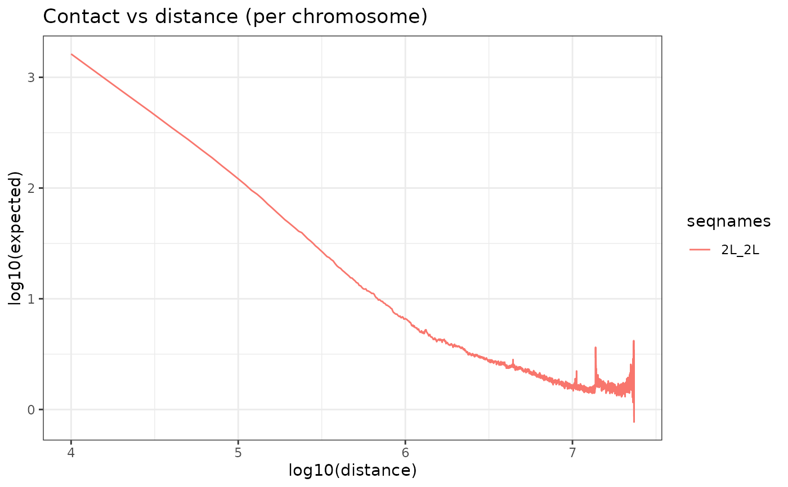

Computes z.test for each target couple over background couples.
Source:R/compare_to_background.R
compare_to_background.RdComputes z.test for each target couple over background couples.
Usage
compare_to_background(
hicList = NULL,
matrices = NULL,
indexAnchor = NULL,
indexBait = NULL,
genomicConstraint = NULL,
secondaryConst.var = NULL,
chromSizes = NULL,
n_background = NULL,
areaFun = "center",
operationFun = "mean",
bg_type = NULL,
cores = 1,
verbose = FALSE,
z_score_per_dist_group = TRUE,
...
)Arguments
- hicList
<ListContactMatrix>: The HiC maps list.
- matrices
<listmatrix>: The matrices list.
- indexAnchor
: A first indexed GRanges object used as pairs anchor (must be indexed using IndexFeatures()).- indexBait
: A second indexed GRanges object used as pairs bait (must be indexed using IndexFeatures()).- genomicConstraint
: GRanges object of constraint regions. If NULL chromosomes in chromSizes are used as constraints (Default NULL) - secondaryConst.var
: A string defining column name containing compartment information in the metadata of anchor and bait objects. (Default NULL) - chromSizes
<data.frame>: A data.frame containing chromosomes names and lengths in base pairs.
- n_background
: Number of background couples to keep. (Default NULL) - areaFun
: A character or function that allows to extract an area from each matrix that composes the matrices list (Default "center"). Look at GetQuantif for more info. - operationFun
: A character or function specifying the operation applied to the selected area (Default "mean"). Look at GetQuantif for more info. - bg_type
: Type of background couples to generate. Possible choices: "random_anchors", "inter_TAD","inter_compartment", NULL (Defaults to "random_anchors"). More information in details... - cores
: Number of cores used. (Default 1) - verbose
details on progress? (Default: FALSE) - z_score_per_dist_group
Should z-scores and p.values for target couples be calculated in separate groups based on distances? Look at details for more. (Default: TRUE) - ...
arguments to pass to PrepareMtxList, inorder to treat background matrices.
Value
returns a object with the z.test output for each
target couple, values for the target couples and values for the
background couples.
Details
Types of background couples possible:
"random_anchors": picks random bins as anchors and forms couples with bait bins. If genomicConstraint is supplied, only intra-TAD random-bait couples are kept. Else intra-TAD random-bait couples within a distance constraint corresponding to the minimal and maximal distances of target couples.
"inter_TAD": If target couples were formed using TAD information with non
NULLgenomicConstraint argument, then inter-TAD anchor-bait couples are used as background. Distance constraint applied correspond to the minimal distance of target couples and maximal width of supplied TADs."inter_compartment": If
secondaryConst.varis notNULLand both indexAnchor and indexBait objects contain the provided variable name, then background couples are formed between anchors and baits located in different compartments."NULL": If
NULL,random_anchorsare set by default.
On the matter of z_score_per_dist_group:
This option was included because we noticed that o/e values tend to be
skewed towards very long distance interactions. As a result, long
distance background couples tend to influence to mean and sd, resulting
in only long distance target couples being significant.
This option would allow the user to perform z-score computation on
couples grouped into chunks of couples with comparative distances
choosen as such: c(0,50000 * 2^seq(1,15)).
This option is recommended when the target couples have a wide range
of distance values.
Examples
h5_path <- system.file("extdata",
"Control_HIC_10k_2L.h5",
package = "HicAggR", mustWork = TRUE
)
binSize=10000
data(Beaf32_Peaks.gnr)
data(TADs_Domains.gnr)
hicLst <- ImportHiC(
file = h5_path,
hicResolution = binSize,
chromSizes = data.frame(seqnames = c("2L"),
seqlengths = c(23513712)),
chrom_1 = c("2L")
)
hicLst <- BalanceHiC(hicLst)
hicLst <- OverExpectedHiC(hicLst)

# Index Beaf32
Beaf32_Index.gnr <- IndexFeatures(
gRangeList = list(Beaf = Beaf32_Peaks.gnr),
chromSizes = data.frame(seqnames = c("2L"),
seqlengths = c(23513712)),
genomicConstraint = TADs_Domains.gnr,
binSize = binSize
)
Beaf_Beaf.gni <- SearchPairs(indexAnchor = Beaf32_Index.gnr)
interactions_Ctrl.mtx_lst <- ExtractSubmatrix(
genomicFeature = Beaf_Beaf.gni,
hicLst = hicLst,
referencePoint = "pf"
)
interactions_Ctrl.mtx_lst <- PrepareMtxList(
matrices = interactions_Ctrl.mtx_lst
)
output_bgInterTAD = compare_to_background(hicList = hicLst,
matrices = interactions_Ctrl.mtx_lst,
indexAnchor = Beaf32_Index.gnr,
indexBait = Beaf32_Index.gnr,
genomicConstraint = TADs_Domains.gnr,
chromSizes = data.frame(seqnames = c("2L"),
seqlengths = c(23513712)),
bg_type="inter_TAD"
)